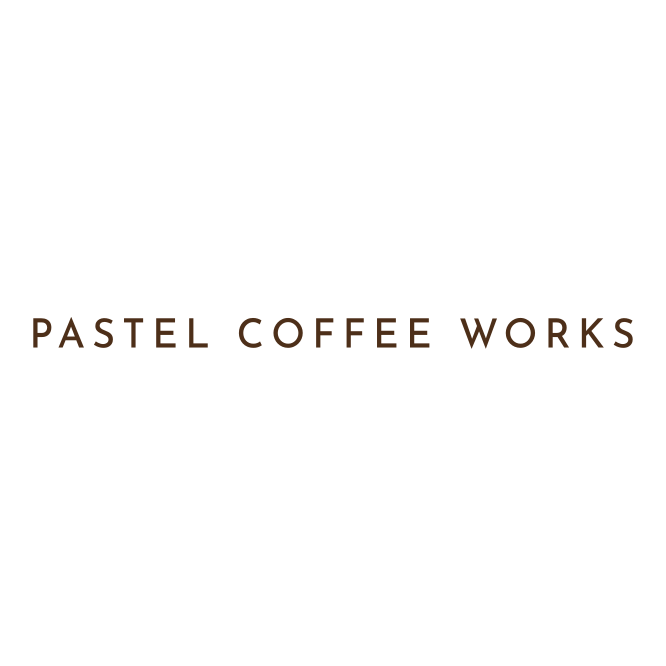
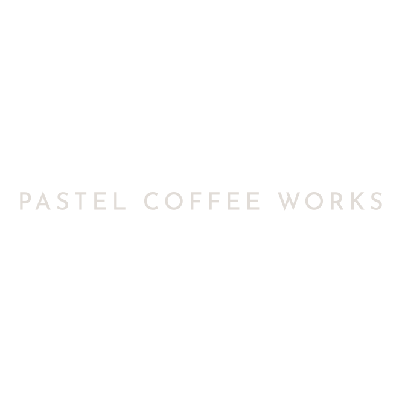

이 문서는 오너 인터뷰와 브랜드 PDF를 종합해 정리된 브랜드 정의를 담고 있습니다. v3 시안 작업과 개발 핸드오프를 위한 단일 참조 문서입니다.
모던 코리안 × 전문가 집단.
"공방"의 폐쇄적 생산 이미지가 아닌, 전문가의 정교한 손길.
제철 원두 · 클린컵 · 다채로운 플레이버 · 자연 그대로.
인공향을 일체 더하지 않고, 원두 본연의 향미를 추구합니다.
사이트의 톤은 홈카페 입문자의 시각으로 맞춥니다. 이미 스페셜티 매니아인 1차 고객은 알아서 찾아오기 때문에, 사이트는 2차 고객을 향해 말해야 합니다.
단, 어린이에게 설명하듯 단순화하지 않습니다. 전문가가 곁에서 친절하게 안내하는 톤으로, 전문 용어는 자연스럽게 녹여 입문자가 품질을 보조적으로 느낄 수 있게 합니다.
홈카페 입문자가 부담 없이 들어와 머무를 수 있도록. 전문 콘텐츠는 깊이 들어가야 보이게 배치합니다.
여러 로스터리를 돌아다니며 원두 구매
집에서 직접 내려 마시기 시작하는 사람
더 나은 삶에 투자하는 라이프스타일 소비자
추상적인 "감성"이 아니라, 증명 가능한 세 가지 사실.
2020 한국바리스타챔피언쉭 우승 경력의 헤드 로스터가 직접 운영. 2021년 밀라노 WBC 한국대표, 빅토리아 아르두이노 브랜드 앤버서더.
대량 일괄 생산이 아닌, 매주 정해진 리듬으로 작은 단위씩. 그날의 컨디션에 맞춰 굽습니다.
신선도가 자체가 약속. 갓 볶은 원두가 손님의 문 앞에 닿을 때까지의 시간을 정직하게 관리합니다.
Aesop.
화장품 브랜드라는 카테고리를 잊게 만드는 정직한 라벨 디자인. 갈색 유리병, 정갈한 활자, 정보 밀도보다 호흡을 우선하는 여백.
v3 시안의 톤 미리보기 — Aesop 방향의 세리프 + 한글 명조 페어링.
로고에서 출발한 단일 갈색조 팔레트. 액센트는 다음 단계에서 결정.
Ink on Paper.

Paper on Ink.
v2까지의 손글씨 톤(Gaegu)은 와이어프레임 신호였습니다.
v3에서는 실제 후보 폰트로 전환합니다.
Cormorant Garamond — Aesop의 Optima 대체로 자주 쓰이는 인본주의 세리프. 무료/오픈 라이선스.
Nanum Myeongjo 또는 본명조 (Source Han Serif) — 한국적 명조의 정직함. v3에서 둘 중 비교 제시 예정.
Pretendard — 한·영 혼용 본문에 가장 깔끔한 한국 오픈소스 산세리프.
기존 e-commerce 메뉴(SHOP · SUBSCRIPTION)를 폐기하고,
잡지·기록물 톤의 5개 메뉴로 재구성합니다.
무엇을 더할까 보다, 무엇을 뺄까가 더 중요한 단계입니다. 아래 항목들은 일반 커피 e-commerce엔 기본으로 있지만 우리는 두지 않습니다.
두 채널은 서로 돕지만, 메인 고객층이 완전히 다릅니다.
각자 자기의 본질에 집중합니다.
v3 시안 진행 중 또는 직후에 정해도 됩니다.
이 브리프 기반으로 실제 폰트·컬러·로고가 적용된 시안 1–3개. 데스크탑 + 모바일 동시.
방향 확정 + 카피 컨펌 + 추가 자산 요청. 필요 시 v3.1 보정.
design-tokens.css, 화면 우선순위, 컴포넌트 스펙, 자산 패키지 일괄 전달. Next.js 구현 시작.